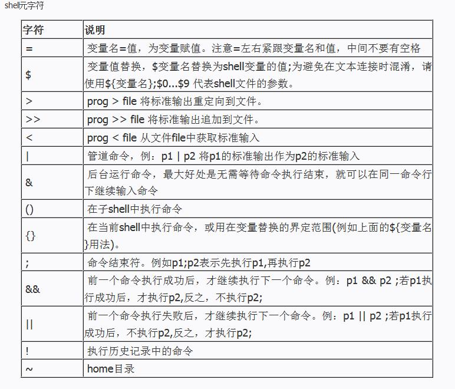
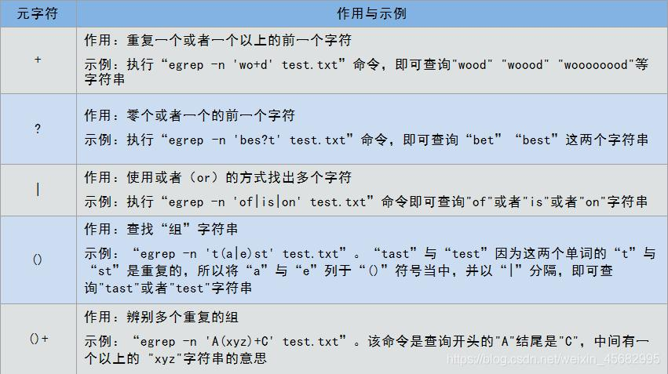

概述
shell中有两类字符：普通字符、元字符。
-
普通字符 在Shell中除了本身的字面意思外没有其他特殊意义，即普通纯文本；
-
元字符 是Shell的保留字符，在Shell中有着特殊的含义。


- Shell 中$的用法
| 名称 | 作用 |
|---|---|
$# |
传给脚本的参数个数 |
$0 |
脚本本身的名字 |
$1 |
传递给该shell脚本的第一个参数 |
$2 |
传递给该shell脚本的第二个参数 |
$@ |
以一个单字符串显示所有向脚本传递的参数，与位置变量不同，参数可超过9个 |
$$ |
脚本运行的当前进程ID号 |
$? |
显示最后命令的退出状态，0表示没有错误，其他表示有错误 |
- 实例
#!/bin/sh
echo "参数个数:$#"
echo "脚本名字:$0"
echo "参数1:$1"
echo "参数2:$2"
echo "所有参数列表:$@"
echo "pid:$$"
if [ $1 = 100 ]
then
echo "命令退出状态：$?"
exit 0 #参数正确，退出状态为0
else
echo "命令退出状态：$?"
exit 1 #参数错误，退出状态1
fi
#!/bin/bash
number=65 #定义一个退出值
index=1 #定义一个计数器
if [ -z "$1" ];then #对用户输入的参数做判断，如果未输入参数则返回脚本的用法并退出，退出值65
echo "Usage:$0 + 参数"
exit $number
fi
echo "listing args with \$*:" #在屏幕输入，在$*中遍历参数
for arg in $*
do
echo "arg: $index = $arg"
let index+=1
done
echo
index=1 #将计数器重新设置为1
echo "listing args with \"\$@\":" #在"$@"中遍历参数
for arg in "$@"
do
echo "arg: $index = $arg"
let index+=1
done
#!/bin/bash
number=65 #定义一个退出值
index=1 #定义一个计数器
if [ -z "$1" ];then #对用户输入的参数做判断，如果未输入参数则返回脚本的用法并退出，退出值65
echo "Usage:$0 + 参数"
exit $number
fi
echo "listing args with \$*:" #在屏幕输入，在$*中遍历参数
for arg in $*
do
echo "arg: $index = $arg"
let index+=1
done
echo
index=1 #将计数器重新设置为1
echo "listing args with \"\$@\":" #在"$@"中遍历参数
for arg in "$@"
do
echo "arg: $index = $arg"
let index+=1
done
- 错误返回值
| 返回值 | 作用 |
|---|---|
| OS error code 1 | Operation not permitted |
| OS error code 2 | No such file or directory |
| OS error code 3 | No such process |
| OS error code 4 | Interrupted system call |
| OS error code 5 | Input/output error |
| OS error code 6 | No such device or address |
| OS error code 7 | Argument list too long |
| OS error code 8 | Exec format error |
| OS error code 9 | Bad file descriptor |
| OS error code 10 | No child processes |
| OS error code 11 | Resource temporarily unavailable |
| OS error code 12 | Cannot allocate memory |
| OS error code 13 | Permission denied |
| OS error code 14 | Bad address |
| OS error code 15 | Block device required |
| OS error code 16 | Device or resource busy |
| OS error code 17 | File exists |
| OS error code 18 | Invalid cross-device link |
| OS error code 19 | No such device |
| OS error code 20 | Not a directory |
| OS error code 21 | Is a directory |
| OS error code 22 | Invalid argument |
| OS error code 23 | Too many open files in system |
| OS error code 24 | Too many open files |
| OS error code 25 | Inappropriate ioctl for device |
| OS error code 26 | Text file busy |
| OS error code 27 | File too large |
| OS error code 28 | No space left on device |
| OS error code 29 | Illegal seek |
| OS error code 30 | Read-only file system |
| OS error code 31 | Too many links |
| OS error code 32 | Broken pipe |
| OS error code 33 | Numerical argument out of domain |
| OS error code 34 | Numerical result out of range |
| OS error code 35 | Resource deadlock avoided |
| OS error code 36 | File name too long |
| OS error code 37 | No locks available |
| OS error code 38 | Function not implemented |
| OS error code 39 | Directory not empty |
| OS error code 40 | Too many levels of symbolic links |
| OS error code 42 | No message of desired type |
| OS error code 43 | Identifier removed |
| OS error code 44 | Channel number out of range |
| OS error code 45 | Level 2 not synchronized |
| OS error code 46 | Level 3 halted |
| OS error code 47 | Level 3 reset |
| OS error code 48 | Link number out of range |
| OS error code 49 | Protocol driver not attached |
| OS error code 50 | No CSI structure available |
| OS error code 51 | Level 2 halted |
| OS error code 52 | Invalid exchange |
| OS error code 53 | Invalid request descriptor |
| OS error code 54 | Exchange full |
| OS error code 55 | No anode |
| OS error code 56 | Invalid request code |
| OS error code 57 | Invalid slot |
| OS error code 59 | Bad font file format |
| OS error code 60 | Device not a stream |
| OS error code 61 | No data available |
| OS error code 62 | Timer expired |
| OS error code 63 | Out of streams resources |
| OS error code 64 | Machine is not on the network |
| OS error code 65 | Package not installed |
| OS error code 66 | Object is remote |
| OS error code 67 | Link has been severed |
| OS error code 68 | Advertise error |
| OS error code 69 | Srmount error |
| OS error code 70 | Communication error on send |
| OS error code 71 | Protocol error |
| OS error code 72 | Multihop attempted |
| OS error code 73 | RFS specific error |
| OS error code 74 | Bad message |
| OS error code 75 | Value too large for defined data type |
| OS error code 76 | Name not unique on network |
| OS error code 77 | File descriptor in bad state |
| OS error code 78 | Remote address changed |
| OS error code 79 | Can not access a needed shared library |
| OS error code 80 | Accessing a corrupted shared library |
| OS error code 81 | .lib section in a.out corrupted |
| OS error code 82 | Attempting to link in too many shared libraries |
| OS error code 83 | Cannot exec a shared library directly |
| OS error code 84 | Invalid or incomplete multibyte or wide character |
| OS error code 85 | Interrupted system call should be restarted |
| OS error code 86 | Streams pipe error |
| OS error code 87 | Too many users |
| OS error code 88 | Socket operation on non-socket |
| OS error code 89 | Destination address required |
| OS error code 90 | Message too long |
| OS error code 91 | Protocol wrong type for socket |
| OS error code 92 | Protocol not available |
| OS error code 93 | Protocol not supported |
| OS error code 94 | Socket type not supported |
| OS error code 95 | Operation not supported |
| OS error code 96 | Protocol family not supported |
| OS error code 97 | Address family not supported by protocol |
| OS error code 98 | Address already in use |
| OS error code 99 | Cannot assign requested address |
| OS error code 100 | Network is down |
| OS error code 101 | Network is unreachable |
| OS error code 102 | Network dropped connection on reset |
| OS error code 103 | Software caused connection abort |
| OS error code 104 | Connection reset by peer |
| OS error code 105 | No buffer space available |
| OS error code 106 | Transport endpoint is already connected |
| OS error code 107 | Transport endpoint is not connected |
| OS error code 108 | Cannot send after transport endpoint shutdown |
| OS error code 109 | Too many references |
| OS error code 110 | Connection timed out |
| OS error code 111 | Connection refused |
| OS error code 112 | Host is down |
| OS error code 113 | No route to host |
| OS error code 114 | Operation already in progress |
| OS error code 115 | Operation now in progress |
| OS error code 116 | Stale NFS file handle |
| OS error code 117 | Structure needs cleaning |
| OS error code 118 | Not a XENIX named type file |
| OS error code 119 | No XENIX semaphores available |
| OS error code 120 | Is a named type file |
| OS error code 121 | Remote I/O error |
| OS error code 122 | Disk quota exceeded |
| OS error code 123 | No medium found |
| OS error code 124 | Wrong medium type |
| OS error code 125 | Operation canceled |
| OS error code 126 | Required key not available |
| OS error code 127 | Key has expired |
| OS error code 128 | Key has been revoked |
| OS error code 129 | Key was rejected by service |
| OS error code 130 | Owner died |
| OS error code 131 | State not recoverable |
| MySQL error code 132 | Old database file |
| MySQL error code 133 | No record read before update |
| MySQL error code 134 | Record was already deleted (or record file crashed) |
| MySQL error code 135 | No more room in record file |
| MySQL error code 136 | No more room in index file |
| MySQL error code 137 | No more records (read after end of file) |
| MySQL error code 138 | Unsupported extension used for table |
| MySQL error code 139 | Too big row |
| MySQL error code 140 | Wrong create options |
| MySQL error code 141 | Duplicate unique key or constraint on write or update |
| MySQL error code 142 | Unknown character set used |
| MySQL error code 143 | Conflicting table definitions in sub-tables of MERGE table |
| MySQL error code 144 | Table is crashed and last repair failed |
| MySQL error code 145 | Table was marked as crashed and should be repaired |
| MySQL error code 146 | Lock timed out; Retry transaction |
| MySQL error code 147 | Lock table is full; Restart program with a larger locktable |
| MySQL error code 148 | Updates are not allowed under a read only transactions |
| MySQL error code 149 | Lock deadlock; Retry transaction |
| MySQL error code 150 | Foreign key constraint is incorrectly formed |
| MySQL error code 151 | Cannot add a child row |
| MySQL error code 152 | Cannot delete a parent row |